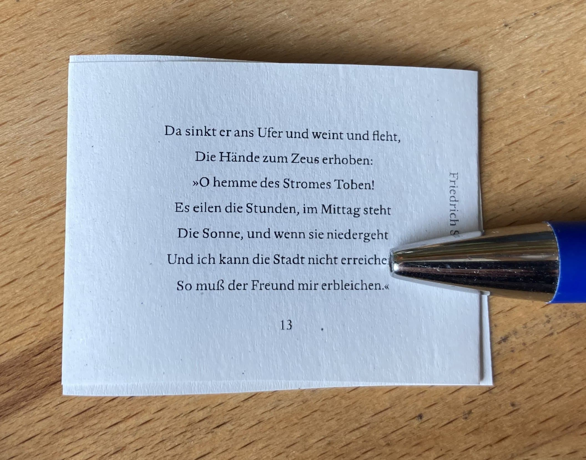

The VIP isn't written to be super user friendly, sorry.
If you're seeking help, you could reach me via a GitHub comment or issue over at the repository.
If you're over 18 years old, you could check out the Renegade Discord and hit up the @Imposer Tamers role.
But talking to people can be scary/hard/slow, so I'll try and dump the answers to questions that I've heard here:
"Frequently" Asked Questions
(more like, "asked at least once")
Q: Is there a way to impose for a book that opens right to left?
A: If you normal-impose a PDF that has all its pages rotated 180 degrees you get a right-to-left book (thanks Lottie!) -- there's also the reverse PDF order button in the 2. PDF Manipulation section (useful if you want a reversed PDF to use for other things)
 Q: Oh no! My printer ate the text at the edge of the page!
Q: Oh no! My printer ate the text at the edge of the page!
A: Use the Paper Margins fields in the 3. Printer Paper to specify how much space you need to hold in reserve for your printer. This space will only be applied at the edges of the page. There's a Download Test Print button that'll give you a PDF -- print that at 100% and count the black & white lines that are clipped/missing to figure out what margin your printer needs. (I use 13pt on both top and bottom to completely avoid it)
( 😅 image thanks to Renedade peep who's name I've forgotten ((remind me if it's you!)) )
Q: How do I impose on Landscape orientated paper
A: a lot of default papers are provided in 3. Printer Paper section's dropdown. Note that the dimensions (in pt) are listed there. To rotate the paper, just type in a custom dimension that's the flip of the default. You don't need to select a custom dimension - just start typing in the text field and use x as the delimiter between the two values.


Q: How can I impose a Tiny landscape?
A: At the time of the asking (mid April) there was no Tiny Landscape- nothing optimally used the paper space. BB made it work using the sextodecimal imposition but had to squander half the paper. This is a reminder that not everything is possible yet and you should be vocal and ask if you'd like that to change. And if you want it changed, be prepared to help me with screenshots and photos to understand what it is you're struggling with. Also a reminder that even if the tool doesn't support it, there are creative work arounds lurking (thank's for the images & ask, BB!)

Q: What (font size/dimensions/margins) do I set up my document for a _____ sized book?
A: It totally depends! ✨ It depends on the size of paper you're using (since all impositions are relative to what you feed your printer). It dpends on whether you're trimming the textblock or not. It dends on the font size you/your audience is comfertable reading. It depends on stylistic choices. Your best bet is to look at existing books/typesets and take measurements AND do some test prints. Figuring out your font size first (and the font itself) is probably the best starting place.
There's sample PDFs in the tests directory for some of the (smaller) impositions (optimized for Letter paper) that display basic font at various sizes -- consider printing the sheet to get some ideas (and familiarize yourself with your printer's skew/capabilities)
Test Files
Sometimes it's easier to figure things out with test PDFs than the fancy PDFs we want to actually print (that often have blank pages or missing page numbers) -- feel free to check out the test PDFs (and the .tex files used to generate them) that I've uploaded to the Github repo HERE.
In particular, I find example_page_numbers.pdf and example_page_numbers_landscape.pdf to be quite helpful.